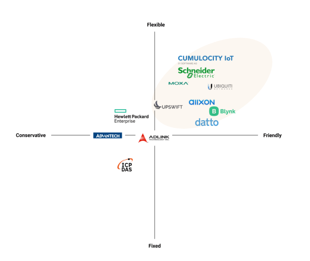

Discovery & Ideate
Based on prior project experience, we know what fundamental features are required for IoT products, and we then use competitive analysis to evaluate the current industry position and trends.
Because the bulk of the competitors are B2B, purchasing them for usage is nearly impossible. I explored the product in three ways: the first was to directly register to use the free version, the second was to read the product's user guide if registration was not possible, and the third was to join the product's community to get a firsthand look at current user complaints and screenshots.
